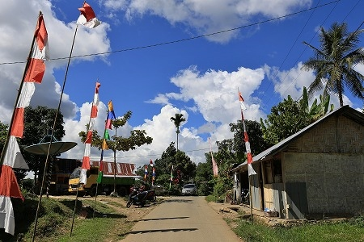
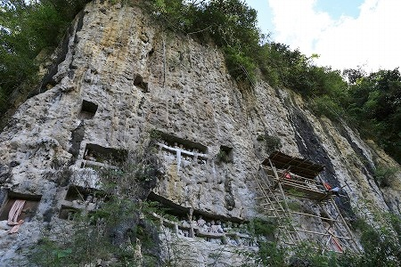
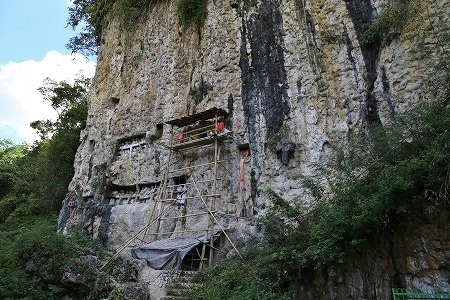
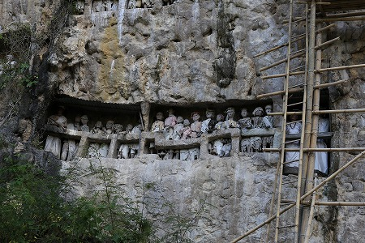
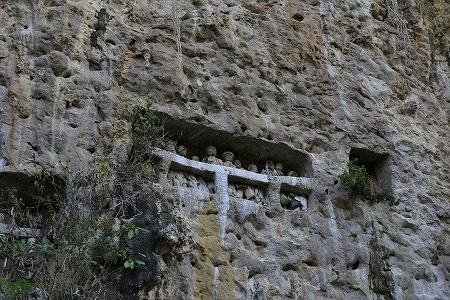
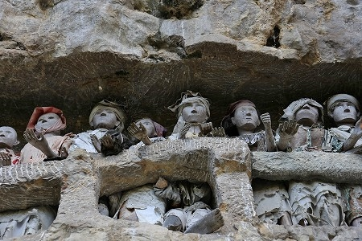
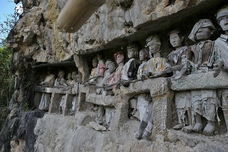
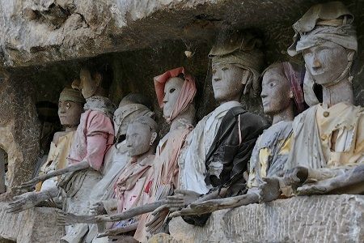
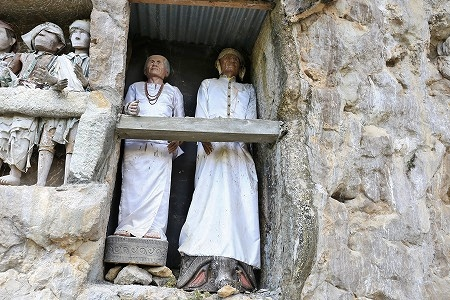
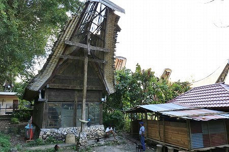

スアヤの墓/Suaya
今日はトラジャの南部の墓巡り。
最初に向かったのは
スアヤという村の墓。

ここも比較的観光化されているようで、数名の外交人観光客の姿がちらほら見えた。
墓地の入り口には土産物と食料を取り扱っている売店&入域料を徴収する小屋があった。
トラジャのメジャーな墓や集落は大抵観光客から入場料を徴収している。
もちろん、墓や村のトンコナン維持のために入場料を払う事に異論はないが、金払って無名の人の墓を見に行くなんてトラジャ以外ではあまりないよなー、などと思ってしまう。
スアヤの墓は切り立った岩壁にある。

トラジャにおいてはまるで「墓にして下さい」と言わんがばかりの岩壁。
こんな
理想的な物件をトラジャの人々が放っておくわけがないのである。
もちろんバッチリ墓穴が掘り込まれているよ。

竹の足場が組まれている。
どうやら新しく墓穴を掘っているようだ。

岩壁には
タウタウ人形がずらりと並んでいた。
どれも風化が激しく、衣装も顔も色が抜けてしまっている。

人形がぎゅうぎゅうに並んでいる。
人形を並べるスペースがなくなってしまったから新しい人形を奉納するのを止めてしまったのか。
それともある一時期に一斉にタウタウ人形を奉納したのか。
いずれにせよボロボロの衣装をまとい、白っぽくなった顔をしたタウタウ人形。
まるで
人形まで死人になっちゃったみたいだ。

人形はかなり高いところにあるのでその表情が読み取れない。
そうか、足場組んであるんだから登っちゃえばいいのか！
上で作業してる兄ちゃんに身振り手振りで登っていいか?と聞くとおお、来いや！との返事。
ではお邪魔しますっ！
竹の梯子は思いの他、ぐわんぐわんしなる。
ついでに言うと梯子や足場を縛っている紐とかかなり細くてあちこち切れたり解けてたりするんですけど…
下を見ると、落ちたら確実に
こっちがタウタウ人形にされちゃうレベル。うわ、大丈夫か？俺。

手元と足元と下しか見ていなかったが、ふと横を見ると目の前にタウタウ人形が並んでいた。
おおお！絶景かな絶景かな。
みな一様に手を天に差し伸べているぞ。

やはり人形はかなり風化している。
しかし間近でみるとその表情は様々だ。
人形は目玉の部分だけ後付けされているので、その目が取れてしまうと洞穴のような目になってしまうのだ。
そうなると人形から生気が失われ、死体っぽくなっちゃう。
中には目が剥がれかかって縦になって面白くなっちゃってる人形もあった。

すぐ脇には新しいタウタウ人形が奉納されていた。
やはり新規のタウタウ人形を奉納するにはこうして新しく穴を掘らなければならないのだ。

墓の前にあるトンコナン風の建物。
四方がガラス張りの建物の中には立派な棺桶などが飾られていた。
廟のような建物なのだろうか、それとも資料館のようなものなのか、良く判らなかった。
次へGO！
トラジャ族の葬式と墓に戻る